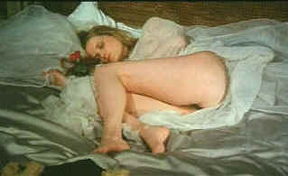

| Beast,
The/ D+, D+ |
| Cult
Epics/1975/94/WS 1.66 |
Against my better judgment I watched The
Beast. Is this an erotic masterpiece? Or a long lost poorly made gothic
porn flick? Will this arouse movie lust in any quarters? No that
I can see. The explicit sexual encounters are mostly laughable, often
disgusting. The bestiality isn't the least bit funny or erotic. Let me strongly
advise that the material will likely
offend viewers lacking a liberal and open view of the free spirit of
film.
Hidden under gauzy parable pretension, The
Beast aspires to piggy back on the erotic possibilities of the
classic fable Beauty and the Beast.
 |
| Sweet
dreams. ©Cult Epics |
There is a history to Borowczyk's film. The core
beast encounter was filmed as part an anthology film. Reworked around an
absurd story of a desperate French family on the verge of bankruptcy,
the kernel of carnality surfaces as a lustful dream. The dream itself
begins hilarious reminiscent of a silent movie as a fair maiden travels
from her tower into the forest. Too bad she had to meet the beast. That
encounter is mostly ludicrous and thoroughly disgusting.
Is Borowczyk playing it for comic effect? I guess so.
The result is something between soft comic book pornography and hard
core depravity. The performances, right down to the beast, are uniformly
stilted. The English Dub from French is atrocious .Let's even credit it
as intentionally bad at least delivering some modicum of humor.
Source elements for this transfer are not in
good shape. I have no idea what the original material looked like, but
this DVD is washed out with poor contrast. Soft focus prevails.
Close-ups provide enough detail, but longer lens shots and busier
compositions are especially weak. There's plenty of dirt and scratches,
which would be livable if only the images were sharp. Sound is
artificial and lacks ambient. Well, no use beating a dead
horse here;
|
|
|
|

The Feature
Archive has articles ranging from Akira
Kurosawa to Blonde
Bimbos.
Movie Rage: Death
in the Aisles
Everyone knows what it feels
like to get angry at the movies these days. Here's a humorous but not so
delightful view of big screen misery.


Agoraquest is
offering reviews, forums, news, and more dedicated to Sony products
including, televisions, cameras, audio, DVD, and more.
 Kinoeye
Archive Kinoeye
Archive
This is a
resource of all content-rich materials on the web relating to Central
and East European cinema. The ultimate aim of the Kinoeye Archive is to
provide a near-as-damn-it definitive index of intelligent and thoughtful
English-language analysis of Central and Eastern European cinema on the
web.

Images is a non-commercial Web site created for everyone who enjoys
movies and popular culture. Images is published quarterly; however, new
reviews will appear each week, so check back often.

Nearly 40 key software and hardware
companies representing leading consumer electronics giants, major movie
studios home video and music video units have joined forces to establish
the DVD Video Group.
|